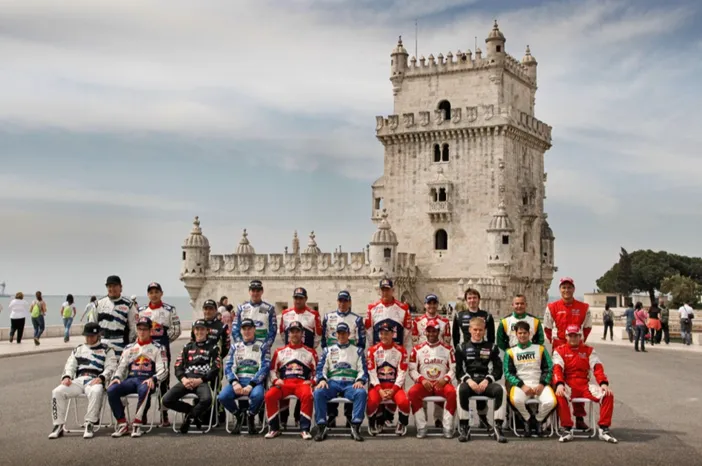
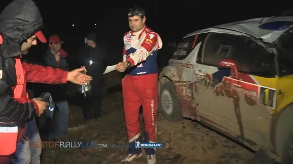
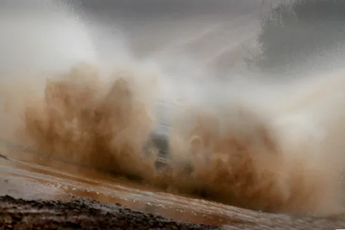
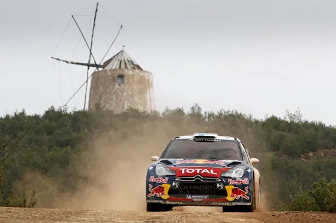
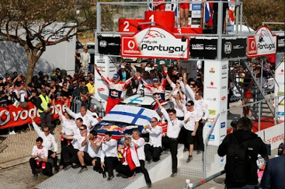
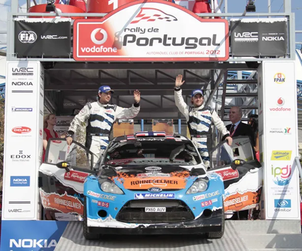

The last privateer win - Portugal 2012
For our second throwback for Rally Portugal, we travel just over 10 years in the past in 2012. 2012 was a transitional year of sorts, as this was Petter Solberg’s and Sebastien Loeb’s final full season. This season also marked the end of Ford being a fully manufacturer team, as the blue oval cut it’s budget giving enough money to M-Sport to continue their project, and Volkswagen was eagerly awaiting on the sidelines for their 2013 debut. There was also a passing of the torch in the driver front as well, as the status quo of the Loeb/Hirvonen duopoly that was established after 2007, which was already expanded in 2010 with Latvala and Ogier, started fading with new drivers making their names known for the future, namely Ostberg, Neuville and Tanak.
Driver’s photo before the Rally
Sebastien Loeb was leading the championship heading to Portugal after winning in Monte Carlo and Mexico, with teammate Mikko Hirvonen trailing by 16 points in 2nd. Petter Solberg was the first of the Fords in 3rd with Mads Ostberg in 4th. The other factory Ford of Latvala was 2 points behind Ostberg, after the Finn retired in Monte Carlo and Mexico. Into the rally proper now, the 2 Fords topped the Qualifying stage (remember that ?) and opted to start last on the road for the 3 night stages that kicked off the rally, with the 2 Citroens electing to start first on the road, worried about hanging dust, which would make visibility near impossible in the night stages. That looked to be a wrong decision as Latvala and Solberg were 1-2 after Thursday night. Loeb crashed out of the rally on Stage 3 after mishearing a pacenote. His DS3 too badly damaged to even restart on Friday. Dani Sordo in the Mini also had problems, his lights went out which isn’t ideal on a night stage as you can imagine and he eventually retired from an electrical fault.

Loeb and Elena would leave Portugal empty handed
On Friday, the weather resembled Portugal 2001. There was a lot rain. And it wasn’t late until the slippy muddy condition caught some of the crews out. First Ott Tanak went off from 4th, going wide in a corner and hitting a giant boulder as he was trying to rejoin the stage. Rally leader Jari Matti Latvala’s rally would also come to an end on the first stage of Friday, as the Finn hit a rock which broke his front left suspension and he ended up in a ditch. The conditions were so treaturous that Dani Sordo who was first on the road was a whopping one minute faster than the new rally leader Petter Solberg in just the first stage of the day !

A testament of how bad the conditions were, try to spot Patrick Sandell’s Mini
Solberg had a golden opportunity to get his first win since 2005, but he blew it, also crashing out of the rally, just one stage after his teammate. That left Hirvonen in the lead, 36s ahead of Evgeniy Novikov in 2nd. Mads Ostberg was 5s behind the Russian, and so that you can get an idea of how crazy the 3 Friday morning stages were, Patrick Sandell was in 4th. The 3 afternoon stages were sensicly canceled as the rain got even worse and the stage conditions resembled those of a freshly plowed field rather than a rally stage.

Mikko Hirvonen was set for his first win in Citroen colours
On Saturday the rain eased up, but the conditions were still very damp. The restarting Petter Solberg made good use of his road position and climbed up to 5th. Mads Ostberg passed Novikov for 2nd and Hirvonen had himself a very nice 1 minute buffer between himdelf and the 2 privateer Fords. The order of things remained the same on Sunday, with Solberg passing Al-Attiyah for 4th, and Hirvonen winning the rally by 2 minutes over Ostberg.

Hirvonen and Citroen celebrating their win
Or did he ?
In the post-rally scruteeniring, it was found that Hirvonen’s DS3 had parts on it that didnt match the ones listed by Citroen. He was therefore disqualified from the event.
That handed Ostberg his first and only win, with Novikov in 2nd on his first
podium finish. Despite Super Rallying and losing 10 minutes, Solberg finished
in 3rd, just 22s behind Novikov. He became the 2nd driver to finish on the
podium after a SR, the first since Loeb in Monte Carlo 2006.

Mads Ostberg deemed the winner with the Adapta Fiesta
Ostberg’s win remains the last trully privateer win in the WRC.


Comments